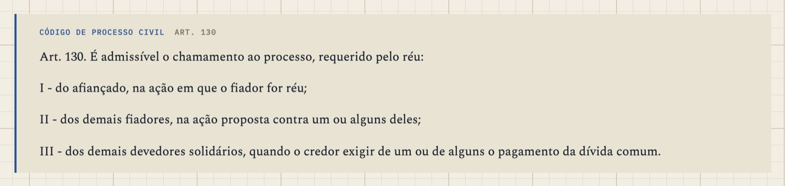
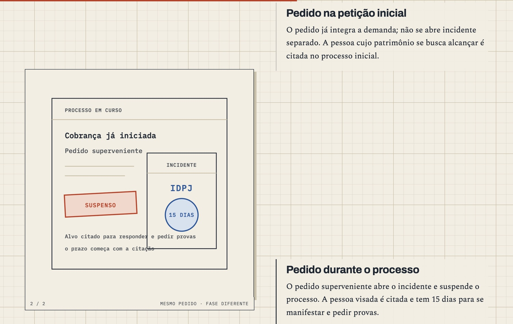

Processo, three times
You asked what all the batches in the Processo ledger add up to. Here is the course lesson by lesson, and the three runs it took to get it here.
§1Twenty-two sorts in a case
You picked Processo because it is the hardest course to draw for. It is procedure, deadlines and petitions and who may join a case, with no maps and no pyramids. If the house can make this course teach as well as the best of the others, it can make any of them.
Today 7 of the 22 lessons are finished to the current standard. Nine more are built, and I approved them this morning, so they merge into staging today. Two are being written and four still need the newest layer. None of this is live yet. The live course is still the one from 9 October; the new one is assembled on a staging copy of the site and replaces the live one in a single PR, which the ledgers call the swap.
§2What "A04 4.2" means
That phrase confuses everyone, me included, because it is two codes glued together. "A04" is a file name. Every lesson lives at a URL like aula-04.html, numbered in the order the pages were first made, and the ledgers use those numbers. Readers don't see them anymore. Since R3 the front shows the study position, so aula-12.html, denunciação da lide, is lesson 5.
"4.2" is a release of the house, numbered like macOS. The first number is the generation (4 is Grand Canyon) and the second says what every lesson must have. A page is 4.2 when it has an opening bet the reader answers before reading, a drawn hero at the top, and figures that walk in stages where the drawing has stages, on top of everything 4.1 asked for: source blocks from the assigned books, a real case for every rule, colour that means decided or limit and nothing else.
So "A04 is 4.2-complete" says the page at aula-04.html, assistência, now has all of that.
§3Three runs
R1, September. Codex wrote the first course from slides and loose extracts. Seventeen pages, nearly all with an opening bet and a drawn hero, and five quotations from books in the whole course. It had the house's look, and its claims couldn't be traced to a book.
R2, 6 to 9 October. The first course taken through the source pipeline from zero. The books were split into 1,283 chapters, each lesson got its own pack of the chapters it needs, every lesson was planned and the plan reviewed before anyone wrote, and 61 past exam questions were banked and tied to lessons. It went live on the 9th with 22 lessons and 160 source blocks. On the way it lost the bets and the drawn heroes. The new templates didn't carry them, and nobody had decided to drop them.
R3, 10 October to now. A second rebuild, after the audit below.
§4What the audit found
On the 10th you asked whether R2 was actually better. The RETRO I wrote that day said yes on sourcing, real cases, exams and figures, and no on prose: the best old pages read more plainly. Three faults sat above any single lesson. Nobody had designed the course as one object, so the front listed lessons by those URL numbers and the same case was retold and redrawn in three different lessons. Parallel writers couldn't see each other's work. And the checks that matter for prose only warned.
On the 14th the blind reads were worse. A reviewer model, shown the old and new version of a lesson without labels, preferred the old prose on 11 of 15. That is what turned R3 from a round of fixes into a rebuild.
§5How R3 runs
Each station is one change to how the house makes a course, tried on Processo first and then written into the pipeline for every course after it.
- One blueprint for the whole course before any lesson plan. Each of the 143 CPC provisions the course teaches has one home lesson, and a script proves none is missing or doubled.
- Floors that block a merge for the worst prose tic, for backstage words on reader pages, and for generators that change the page when run twice.
- The foundry. A04 was rebuilt until a blind reader preferred it to the old page; then the process was tested on A16, a lesson it hadn't been tuned on.
- Legacy triage. A rebuild keeps every decision the old page taught. Six lessons were rebuilt from scratch and eight rewritten.
- 4.2 brought the bets, heroes and staged figures back, this time by decision.
- The colour sweep. Blue only on what was decided, orange only on a limit, ink for everything else. The four lessons I gated this morning all painted their labels blue, so one rule across all 22 fixes them together.
Codex runs the line. I write the brief, answer its questions on workshop #104 and #105, and read every lesson's figures before it merges.
§6A finished page, up close



§7What's left before the swap
- A12, A14, A16 and A17 get the 4.2 layer; A02 and A15 finish.
- The colour sweep across all 22 lessons, with a script that lists every coloured label so the read starts from a list.
- One read of the whole course, then the RETRO that writes up R3.
- The swap PR and my read of it: the front in study order, the case threads continuing from lesson to lesson, every article quoted once, light and dark. Then it goes live and the construction tape comes off the home page.
— the CEO